The ARM::CMSIS Pack contains tutorials that are explained on the following pages. In the \CMSIS\Pack\Tutorials directory the following three ZIP files are available:
- Note
- To work with these tutorials, make sure that you have installed the environment that is required for the Bash Script gen_pack.sh as this will be used to verify and create the tutorial packs.
Steps to Create a Pack
The following image shows the basic steps that are required to create a Software Pack:
- Produce input: Create the files that will be delivered with the Pack (source code, header and library files, documentation).
- Organize files: For better maintainability, use directories to separate the content of the Pack.
- Create PDSC file: The XML based PDSC file can be created using any text editor. Editors that can validate XML code against a schema file help to find bugs early in the Pack development stage.
- Generate Pack: Any compression tool supporting the ZIP format can be used to create a Pack file. PackChk is helpful for the validation of the contents of a Pack.
- Note
- Steps 3 and 4 are covered automatically if you are using the gen_pack.sh script to generate the pack.
The following sections show how to create a Software Pack from scratch:
Pack with Software Components
This tutorial explains how to create a Software Pack. First, a simple Software Pack is created that contains only one software component. Then, it is extended to show the various features for describing software components.
Preparations
- Create a working directory on you PC, for example C:\temp\working.
- Go to the directory \CMSIS\Pack\Tutorials available in the ARM::CMSIS Pack installation. Please consult your development tool's documentation for more information on the Pack installation directory structure. In a standard µVision installation, you will find it below %localappdata%\Arm\Packs\ARM\CMSIS\version.
- Unzip the file Pack_with_Software_Components.zip.
- Copy the content of the ZIP file's 01_Create_PDSC directory into your working directory.
- Copy the gen_pack.sh script from your CMSIS-Pack installation's \CMSIS\Pack\Bash directory to the working directory.
- Make sure that files/directories are not write protected (remove read-only flag).
Create PDSC File
-
Open the file vendor.pack_name.pdsc in an editor and change it like this:
<?xml version="1.0" encoding="UTF-8"?>
<package schemaVersion="1.6.3" xmlns:xs="http:
<vendor>MyVendor</vendor>
<name>MyPack</name>
<description>Internal Software Pack</description>
<url></url>
<supportContact></supportContact>
<license>Docs/license.txt</license>
- Note
- All code examples in this and the following sections can be found in the
snippets.xml file in the 01_Create_PDSC directory.
A PDSC file starts with information on the XML version and the encoding. The <package> element declares the version of the schema file and the XSD file that is used to validate the PDSC file:
- <name> specifies the name of the Pack and must not contain spaces. Example:
MyPack and My_Pack are ok, My Pack is not ok.
- <description> describes the Pack in a few words.
- <vendor> states the name of the Pack's vendor and must not contain spaces. Example:
ACMECorp and ACME_Corp are OK, ACME Corporation is not OK.
- <url> defines the download URL of the Pack (may be left empty)
- Note
-
- <supportContact> may provide an email address or web page URL for Pack specific questions/problems.
- <license> links to an optional license file that will be shown during the installation of the Pack. The installation in development tools will abort if the license agreement is not accepted.
-
Add release information and keywords:
<releases>
<release version="1.0.0">
Initial version
</release>
</releases>
<keywords>
<keyword>MyVendor</keyword>
<keyword>My Software Component</keyword>
</keywords>
The information from the <releases> section will be used for:
- Determining the Pack version (required for the file name of the Pack file)
- Display of release information
- Note
- Usually, you need to add a
<date> tag to a <release version>. If you omit this, PackChk will issue a warning. To keep the tutorial simple, the <date> tag is not used here (as it requires consecutive dates for different versions).
<keywords> may be used for better visibility for search engines.
-
Add a <components> section with the following:
<components>
<component Cclass="MyClass" Cgroup="MyGroup" Csub="MySubGroup" Cversion="1.0.0">
<description>MySWComp</description>
<files>
<file category="doc" name="Docs/MySWComp.htm"/>
<file category="header" name="MySWComp/header_mylib.h"/>
<file category="header" name="MySWComp/config/config_mylib.h" attr="config" version="1.0.0"/>
<file category="source" name="MySWComp/mylib_one.c"/>
<file category="source" name="MySWComp/mylib_two.c"/>
</files>
</component>
</components>
- Note
- If you are using a header file with the attribute config, save it in a separate directory from all other header files as in this example. Configuration files are copied into the project folder and are adopted specifically for that project. But due to the include path search order of the compiler, it might happen that the unmodified header file in the pack repository is found first and used which might end up in unexpected results.
More information on <components> will be given in section Software Components. Save the file and close your editor. In the next section, the generation of a Pack will be explained in detail.
Generate a Pack
-
Rename the file vendor.pack_name.pdsc to MyVendor.MyPack.pdsc (according to the <vendor> and <name> elements in the PDSC file).
-
Open gen_pack.sh from your working directory in an editor. Modify the variables
CMSIS_PACK_PATH and PATH_TO_ADD reflect your setup. The following is an example for a Git Bash on Windows: CMSIS_PACK_PATH="$LOCALAPPDATA/Arm/Packs/ARM/CMSIS/5.7.0"
PATH_TO_ADD="/C/Program Files/7-Zip/:$CMSIS_PACK_PATH/CMSIS/Utilities/Win32/:/C/xmllint/"
- Note
- Refer to section Utilities for Creating Packs for hints on how to install the required tools.
-
Having saved gen_pack.sh, open a Bash console in the current directory and run the script. The shell script will:
- Run a schema check on the PDSC file using xmllint.
- Run PackChk
- Create the MyVendor.MyPack.1.0.0.pack Pack file in the ./output sub-directory.
-
Install the Pack by double-clicking it. Depending on the development software that is used, the display of the Pack contents may differ:
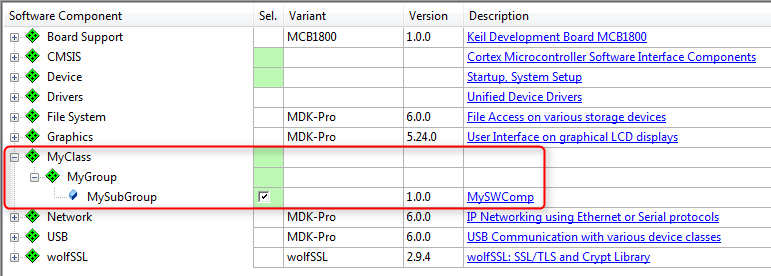
MyClass:MyGroup:MySubGroup shown in development tool
Software Components
A component lists the files that belong to it and that are relevant for a project. The component itself or each individual file may refer to a condition that must resolve to true; if it is false, the component or file is not applicable in the given context.
Each software component must have the following attributes that are used to identify the component:
- Component Class (
Cclass): examples are CMSIS, Device, File System
- Component Group (
Cgroup): examples are CMSIS:RTOS, Device:Startup, File System:CORE
- Component Version (
Cversion): the version number of the software component.
Optionally, a software component may have additional attributes:
- Component Sub-Group (
Csub): examples are CMSIS:RTOS:MyRTOS, Device:Driver USBD:Full-speed
- Component Variant (
Cvariant): a variant of the software component.
- Component Vendor (
Cvendor): the supplier of the software component.
The Cclass, Cgroup, Csub, Cvariant and Cversion attributes are used together with the vendor specified by the Pack to identify a component. A component vendor must ensure that the combination Cclass, Cgroup, Csub and Cversion is unique and not used by multiple components within the same Pack.
For a list of established Cclass identifiers, refer to Software Component Cclasses.
In case multiple interdependent components (belonging to the same Cclass) form part of a solution, these can be grouped in a so called bundle.
Use the following syntax to reference to software components and APIs:
<Vendor>::<Cclass>:<Cgroup>:<Csub>
Examples:
- ::CMSIS:RTOS (API) - the CMSIS-RTOS API.
- ARM::CMSIS:DSP - the CMSIS-DSP Library.
- ::File System:Drive:NOR - the NOR Flash Drive of a file system.
Here is an example for the display of software components in a development tool:
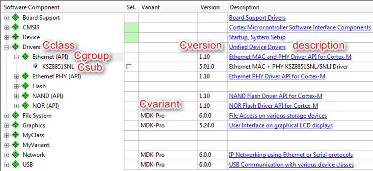
Display of a software component in development tools
Software Component Files
Each software component consists of a certain number of files. Each file has at least the following attributes:
name: File path, file name, and file extension in the format path/name.extension. The file path is relative to the root directory of the Pack.path: For the category="header", the path attribute can be used explicitly to specify the include path to be added to the commandline of the build tools, specifying an incomplete path.category: Defines the purpose of the file. Select the predefined value as listed in the table File Categories.
Optionally, every file may have the following attributes:
attr: Defines the special use and handling of a file. Select a predefined value as defined in the table File Attributes.condition: Enter the identifier (attribute id) of a condition. The element is used if the condition resolves to true.select: Brief description and purpose of the file. The select attribute is required when attr is set to template or interface. When multiple template files of a component have the same select string, they are treated as a single selectable template. This way, multiple template or interface files can be bundled.src: Path information. The path is specified relative to the Pack Description File (PDSC).version: File-specific version information. This is used particularly for files copied into the project workspace. Before a file gets copied, a version check avoids unnecessary copy actions. If a file does not have a version, then the component version is used.public: Set publishing permissions for the documentation. If true, the documentation can be extracted and published on a web page.
Conditions
A condition describes dependencies on:
- a specific device
- a certain processor
- tool attributes
- the presence of other components
Conditions are used to define AND/OR rules that make components conditional and therefore only available under certain circumstances, for example for specific devices or processors. Conditions are also used to express dependencies between software components.
Each condition has an id that is unique within the scope of a the PDSC file. An id can be referenced in the condition attribute of components, APIs, examples, files and other conditions. All attributes set in a accept, require, or deny element must resolve to true for the element to become true. A condition becomes true when:
- At least one accept element is true, AND
- all require elements are true, AND
- no deny element is true.
If a condition resolves to false during processing, the respective element will be ignored.
Modify the example from the Create PDSC File section by adding the requirement for a CMSIS-RTOS v2 and libraries that are specific to a certain Cortex-M class core:
mylib_cm0.lib for use with a Cortex-M0 and Cortex-M0+ processormylib_cm3.lib for use with a Cortex-M3 processormylib_cm4.lib for use with a Cortex-M4 or Cortex-M7 processor
Copy the content of the 02_Conditions/MySWComp directory of the Pack_with_Software_Components.zip file to the current working directory:
-
Add a <conditions> section with the following:
<conditions>
<condition id="Arm Compiler">
<require Tcompiler="ARMCC" Toptions="AC6"/>
</condition>
<condition id="CM0">
<description>Cortex-M0 based device</description>
<require condition="Arm Compiler"/>
<accept Dcore="Cortex-M0"/>
<accept Dcore="Cortex-M0+"/>
</condition>
<condition id="CM3">
<description>Cortex-M3 based device</description>
<require condition="Arm Compiler"/>
<accept Dcore="Cortex-M3"/>
</condition>
<condition id="CM4_CM7">
<description>Cortex-M4 based device</description>
<require condition="Arm Compiler"/>
<accept Dcore="Cortex-M4"/>
<accept Dcore="Cortex-M7"/>
</condition>
<condition id="CMSIS Core with RTOS2">
<description>CMSIS Core with RTOS2 for Cortex-M processor</description>
<accept condition="CM0"/>
<accept condition="CM3"/>
<accept condition="CM4_CM7"/>
<require Cclass="CMSIS" Cgroup="CORE"/>
<require Cclass="CMSIS" Cgroup="RTOS2"/>
</condition>
</conditions>
-
Change the first line of the already existing component by adding the condition and increasing the version number of the component:
<component Cclass="MyClass" Cgroup="MyGroup" Csub="MySubGroup" Cversion="1.0.1" condition="CMSIS Core with RTOS2">
-
Add the following code to the already existing component:
<file category="library" condition="CM0" name="MySWComp/Lib/mylib_cm0.lib"/>
<file category="library" condition="CM3" name="MySWComp/Lib/mylib_cm3.lib"/>
<file category="library" condition="CM4_CM7" name="MySWComp/Lib/mylib_cm4.lib"/>
-
Add a new version number to the header of the PDSC file so that a Pack with a new version number will be created:
<release version="1.0.1">
Conditions added
</release>
-
Finally, save the PDSC file and regenerate the Pack file using the gen_pack.sh script. See Generate a Pack for further details. Afterwards, install the Pack in your development tool and observe the differences to version 1.0.0.
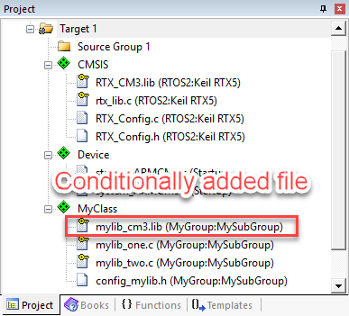
Display of conditionally added files for a Cortex-M3 device in development tools
Variants
Software components may have variants, for example:
- Debug version with or release version without diagnostic output
- Long/short file names in a File System component
- Fast/slow modes
Variants are mutually exclusive (only one variant can be chosen at a time). Cvariant is an optional part of the component ID. The variant specifier is a brief string (e.g. release, debug).
- Note
- Version management relies on variants to remain unchanged between versions.
The following example introduces a new component to the Pack in two variants: debug and release. Copy the content of the 03_Variants directory of the Pack_with_Software_Components.zip file to the current working directory.
-
Add the following lines to the components section in your PDSC file:
<component Cclass="MyVariant" Cgroup="MyGroup" Cvariant="Release" Cversion="1.0.2" condition="CMSIS Core with RTOS2">
<description>Release version of MyVariant</description>
<RTE_Components_h>
<!-- the following content goes into file 'RTE_Components.h' -->
#define RTE_MyVariant_Release
</RTE_Components_h>
<files>
<file category="doc" name="Docs/MySWComp.htm"/>
<file category="header" name="MySWComp/header_mylib.h"/>
<file category="header" name="MySWComp/config/config_mylib.h" attr="config" version="1.0.0"/>
<file category="source" name="MySWComp/mylib_one.c"/>
<file category="source" name="MySWComp/mylib_two.c"/>
<file category="library" condition="CM0" name="MySWComp/Lib/mylib_cm0.lib"/>
<file category="library" condition="CM3" name="MySWComp/Lib/mylib_cm3.lib"/>
<file category="library" condition="CM4_CM7" name="MySWComp/Lib/mylib_cm4.lib"/>
</files>
</component>
<component Cclass="MyVariant" Cgroup="MyGroup" Cvariant="Debug" Cversion="1.0.2" condition="CMSIS Core with RTOS2">
<description>Debug version of MyVariant</description>
<RTE_Components_h>
<!-- the following content goes into file 'RTE_Components.h' -->
#define RTE_MyVariant_Debug
</RTE_Components_h>
<files>
<file category="doc" name="Docs/MySWComp.htm"/>
<file category="header" name="MySWComp/header_mylib.h"/>
<file category="header" name="MySWComp/config/debug_config_mylib.h" attr="config" version="1.0.0"/>
<file category="source" name="MySWComp/debug_mylib_one.c"/>
<file category="source" name="MySWComp/debug_mylib_two.c"/>
<file category="library" condition="CM0" name="MySWComp/Lib/debug_mylib_cm0.lib"/>
<file category="library" condition="CM3" name="MySWComp/Lib/debug_mylib_cm3.lib"/>
<file category="library" condition="CM4_CM7" name="MySWComp/Lib/debug_mylib_cm4.lib"/>
</files>
</component>
-
Add a new revision to reflect the changes in a newly generated Pack:
<release version="1.0.2">
Variants introduced
</release>
-
Finally, save the PDSC file and regenerate the Pack file using the gen_pack.sh script. See Generate a Pack for further details. Afterwards, install the Pack in your development tool and observe the differences to version 1.0.1.
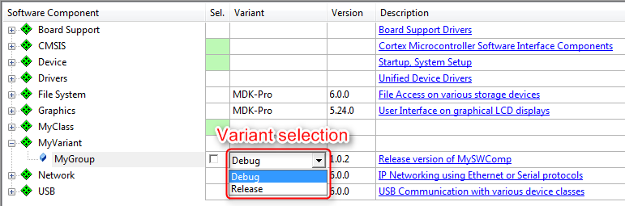
Display of MyVariant in development tools
RTE_Components.h
Sometimes, software components need to know of other components. Depending on the availability or configuration of another component, certain settings may be required. A distinct header file is available to make components aware of each other: RTE_Components.h. To add a line of C code to this header file, simply add this to your component:
<RTE_Components_h>
#define RTE_MyVariant_Debug /* MyVariant Debug Version */
</RTE_Components_h>
The #define can be checked by other components in a project.
- Note
- The RTE_components.h file needs to be included somewhere in your source files. Refer to RTE_Components.h for more information.
Bundles
A bundle is basically a variant on the Cclass level. It specifies the attributes Cclass, Cversion and optionally Cgroup and Cvendor for a collection of interdependent components. Components within a bundle inherit the attributes set by the bundle and must not set these attributes again. Bundles ensure consistency of attributes across multiple interworking components and restrict the mix and match of components within a Cclass from different solutions. In addition to components, a bundle has the mandatory elements description and doc (for documentation).
An example of a bundle is shown in the Create a BSP Bundle section where the bundle is used to deliver board support files for a certain development platform.
Instances
Some software components allow several instances. For example, this is useful if more than one peripheral can be connected.
-
Adding the information about a maximum number of instances is easy. Change the first component (::MyClass:MyGroup:MySub) as follows:
<component Cclass="MyClass" Cgroup="MyGroup" Csub="MySubGroup" Cversion="1.0.3" condition="CMSIS Core with RTOS2" maxInstances="3">
-
Add a new version number:
<release version="1.0.3">
Maximum number of instances specified
</release>
-
Finally, save the PDSC file and regenerate the Pack file using the gen_pack.sh script. See Generate a Pack for further details. Afterwards, install the Pack in your development tool and observe the differences to version 1.0.2. When selecting a certain number of instances of the component, causes the development tool to copy the required configuration files multiple times into the project. This ensures that each component instance can be configured separately.
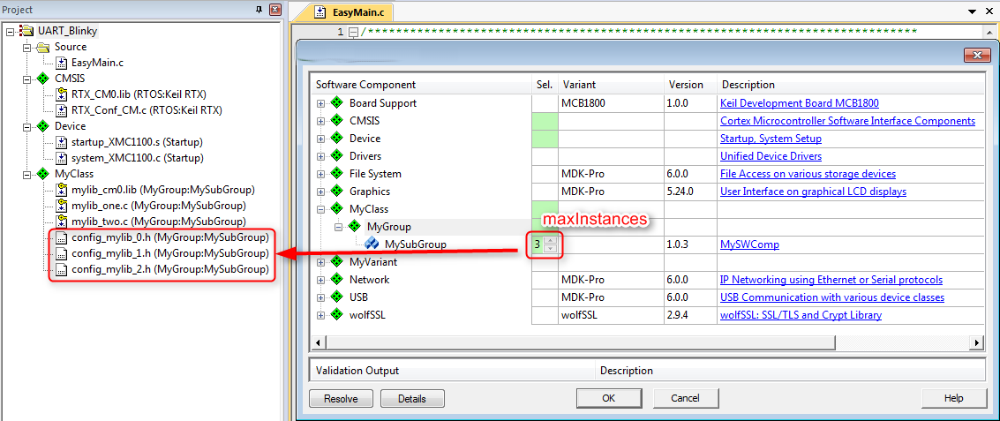
Display of component instances in development tools
API Interface
An API is a special form of a software component that only defines a C/C++ Application Programming Interface (API). An API does not contain the actual implementation (usually provided by source code or library files) and cannot be selected in a development tool. An example is the CMSIS-RTOS v2 API, which is specified as part of CMSIS. However, the actual RTOS implementation is provided by different vendors. An API consists of a name, a brief description as well as one or more header files, and a document containing a detailed specification of the API.
Copy the content of the 05_APIs directory of the Pack_with_Software_Components.zip file to the current working directory:
-
Add a <apis> section with the following:
<api Cclass="Device" Cgroup="MyAPI" exclusive="0">
<description>API for MyAPI</description>
<files>
<file category="doc" name="Docs/API/MyAPI.htm"/>
<file category="header" name="API/Include/MyAPI.h"/>
</files>
</api>
-
Add a new version number:
<release version="1.0.4">
MyAPI added
</release>
-
Finally, save the PDSC file and regenerate the Pack file using the gen_pack.sh script. See Generate a Pack for further details. Afterwards, install the Pack in your development tool and observe the differences to version 1.0.3. Most likely, you will see none as APIs are not selectable and are thus not displayed in the tools.
User Code Templates
User code templates provide a quick start for implementing an application. To add user code templates, add source files with the attribute attr=“template” in a <component>. The select attribute is used to identify template files. Template files with the same select attribute will be added to a project simultaneously.
Copy the content of the 06_User_Code_Templates directory of the Pack_with_Software_Components.zip file to the current working directory:
-
Add the following code to both variants (
debug and release) of the ::MyVariant:MyGroup component: <file category="source" name="MySWComp/Templates/mylib_template1.c" attr="template" select="Easy Template"/>
<file category="source" name="MySWComp/Templates/mylib_template2.c" attr="template" select="Complex Template"/>
<file category="source" name="MySWComp/Templates/mylib_template3.c" attr="template" select="Complex Template"/>
-
Add a new version number:
<release version="1.0.5">
User Code Templates added
</release>
-
Finally, save the PDSC file and regenerate the Pack file using the gen_pack.sh script. See Generate a Pack for further details. Afterwards, install the Pack in your development tool and observe the differences to version 1.0.4.
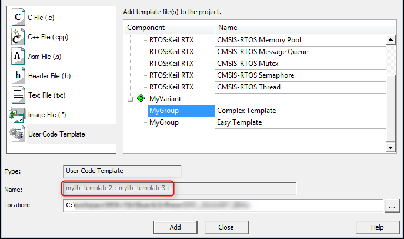
Display of user code templates in development tools
Example Projects
Example projects help to understand a certain MCU or development board better. An example and each individual file of it may refer to a condition that must resolve to true; if it is false, the example or file will be ignored. The board element is used to reference to one or more board descriptions using the board vendor and name an example is targeted for. Each example can specify attributes listing related components using Cclass, Cgroup, Csub and Cversion. The <project> element contains the names of the supported development tools and the project files to be loaded.
Adding example projects is an iterative process. First, you need to create the pack, so that you can create a project that is using the software components from the pack. Once this project is ready to be shipped, you can add it to the pack and publish it.
Copy the content of the 07_Example_Projects directory of the Pack_with_Software_Components.zip file to the current working directory:
-
Add an <examples> section with the following:
<examples>
<example name="MyDevBoard Example" doc="Abstract.txt" folder="MyPackExample">
<description>CMSIS-RTOS based example</description>
<board name="MyDevBoard" vendor="MyVendor"/>
<project>
<environment name="uv" load="MyPackExample.uvprojx"/>
</project>
<attributes>
<component Cclass="CMSIS" Cgroup="Core"/>
<component Cclass="Device" Cgroup="Startup"/>
<component Cclass="CMSIS" Cgroup="RTOS"/>
<component Cclass="MyVariant" Cgroup="MyGroup"/>
</attributes>
</example>
</examples>
-
Add a new version number:
<release version="1.0.6">
Example project added
</release>
-
Finally, save the PDSC file and regenerate the Pack file using the gen_pack.sh script. See Generate a Pack for further details. Afterwards, install the Pack in your development tool and observe the differences to version 1.0.5.
- Note
- PackChk will issue a warning as the board described above is not known:
*** WARNING M324: C:\03_work\Packs\Arm\Tutorial\01_Create_PDSC\build\MyVendor.MyPack.pdsc (Line 116)
Board referenced in Example 'MyDevBoard Example' not found: '[MyVendor] MyDevBoard'
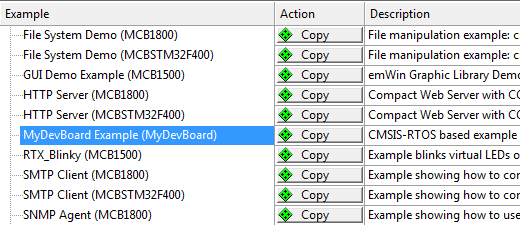
Display of example projects in development tools
Example projects rely on a development board to be present (as the code needs to run on real hardware). In the code above you will notice that a development board called "MyDevBoard" was specified. Pack with Board Support explains how to integrate boards into a Pack.
Pack with Device Support
A Software Pack that contains a <devices> element is called Device Family Pack (DFP). A DFP may contain additional Software Components, Board, Example Projects, or any combination of those. The typical content of a DFP is:
This section explains how to create a DFP. Initially, the PDSC file in the DFP only describes devices. This DFP is then extended to contain also SVD files, flash algorithms, and device related software components such as system and HAL files. Example projects and code templates may be added as described in the section Pack with Software Components.
DFP Use Cases
A Device Family Pack (DFP) may be provided by a silicon vendor and is used to extend development tools with support for new devices. In general, the DFP enables silicon vendors to distribute tool independent device support for their device families.
DFPs can also be used to provide information for the display on web sites. One example is the new device database on developer.arm.com:
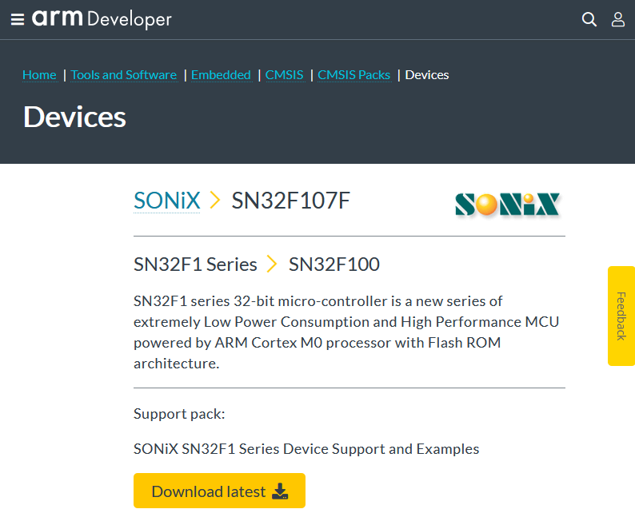
Device information on a web site extracted from a DFP
Steps to Create a DFP
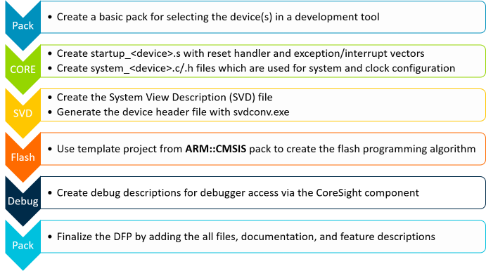
Basic Device Family Pack
In the following sections, a DFP will be created for a fictional device family called MVCM3 from the device vendor MyVendor. The device family consists of four member that are separated into two sub-families. The specification of the MVCM3 family is as follows:
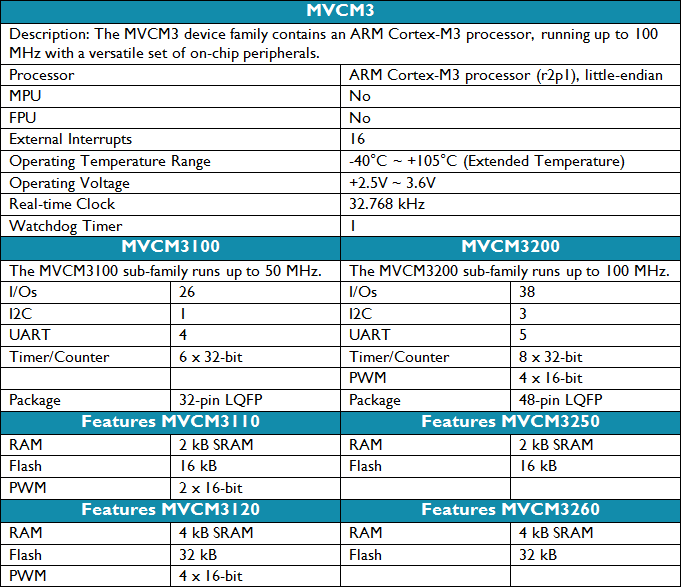
MVCM3 Device Family Specification
Preparations
- Create a working directory on you PC, for example C:\temp\working_dfp.
- Go to the directory \CMSIS\Pack\Tutorials available in the ARM::CMSIS Pack installation. Please consult your development tool's documentation for more information on the Pack installation directory structure. In a standard µVision installation, you will find it below %localappdata%\Arm\Packs\ARM\CMSIS\version.
- Open the file Pack_with_Device_Support.zip.
- Copy the file MyVendor.MVCM3.pdsc of the ZIP file's 01_Basic_Pack directory into your working directory.
- Make sure that file are not write protected (remove read-only flag).
- Copy the gen_pack.sh script from your CMSIS-Pack installation's \CMSIS\Pack\Bash directory to the working directory.
- Open the MyVendor.MVCM3.pdsc file in an editor.
Code Example
-
Add a <devices> section in the PDSC file with the following:
<devices>
<family Dfamily="MVCM3 Series" Dvendor="Generic:5">
<processor Dcore="Cortex-M3" DcoreVersion="r2p1" Dfpu="0" Dmpu="0" Dendian="Little-endian"/>
<description>
The MVCM3 device family contains an Arm Cortex-M3 processor, running up to 100 MHz with a versatile set of on-chip peripherals.
</description>
<!-- ************************ Sub-family 'MVCM3100' **************************** -->
<subFamily DsubFamily="MVCM3100">
<processor Dclock="50000000"/>
<!-- ************************* Device 'MVCM3110' ***************************** -->
<device Dname="MVCM3110">
<memory name="IROM1" access="rx" start="0x00000000" size="0x4000" startup="1" default="1"/>
<memory name="IRAM1" access="rw" start="0x20000000" size="0x0800" init ="0" default="1"/>
</device>
<!-- ************************* Device 'MVCM3120' ***************************** -->
<device Dname="MVCM3120">
<memory name="IROM1" access="rx" start="0x00000000" size="0x8000" startup="1" default="1"/>
<memory name="IRAM1" access="rx" start="0x20000000" size="0x1000" init ="0" default="1"/>
</device>
</subFamily>
<!-- ************************ Sub Family 'MVCM3200' **************************** -->
<subFamily DsubFamily="MVCM3200">
<processor Dclock="100000000"/>
<!-- ************************* Device 'MVCM3250' ***************************** -->
<device Dname="MVCM3250">
<memory name="IROM1" access="rx" start="0x00000000" size="0x4000" startup="1" default="1"/>
<memory name="IRAM1" access="rw" start="0x20000000" size="0x0800" init ="0" default="1"/>
</device>
<!-- ************************* Device 'MVCM3260' ***************************** -->
<device Dname="MVCM3260">
<memory name="IROM1" access="rx" start="0x00000000" size="0x8000" startup="1" default="1"/>
<memory name="IRAM1" access="rw" start="0x20000000" size="0x1000" init ="0" default="1"/>
</device>
</subFamily>
</family>
</devices>
- Note
Dvendor IDs are not freely selectable. The very latest set of IDs can be found in the PACK.xsd file on GitHub. If you are a new device vendor, please contact cmsis@arm.com to get a Dvendor ID assigned.- This section's code examples can be found in the
snippets.xml file in the ZIP file's 01_Basic_Pack directory.
- Usually, you need to add a
<date> tag to a <release version>. If you omit this, PackChk will issue a warning. To keep the tutorial simple, the <date> tag is not used here (as it requires consecutive dates for different versions).
-
Open gen_pack.sh from your working directory in an editor. Modify the variables
CMSIS_PACK_PATH and PATH_TO_ADD reflect your setup. The following is an example for a Git Bash on Windows: CMSIS_PACK_PATH="$LOCALAPPDATA/Arm/Packs/ARM/CMSIS/5.7.0"
PATH_TO_ADD="/C/Program Files/7-Zip/:$CMSIS_PACK_PATH/CMSIS/Utilities/Win32/:/C/xmllint/"
- Note
- Refer to section Utilities for Creating Packs for hints on how to install the required tools.
-
From the
PACK_BASE_FILES variable, delete License.txt and README.md. We don't use them in this tutorial.
-
Having saved gen_pack.sh, open a Bash console in the current directory and run the script. The shell script will:
- Run a schema check on the PDSC file using xmllint.
- Run PackChk
- Create the MyVendor.MVCM3.1.0.0.pack Pack file in the ./output sub-directory.
-
PackChk will issue a couple of warnings that we will take care of later:
*** WARNING M350: C:\03_work\Packs\Arm\Tutorial\DFP\working\build\MyVendor.MVCM3.pdsc (Line 35)
No 'Startup' component found for [Generic:5] 'MVCM3110' (Compiler: [])
*** WARNING M350: C:\03_work\Packs\Arm\Tutorial\DFP\working\build\MyVendor.MVCM3.pdsc (Line 35)
No 'Startup' component found for [Generic:5] 'MVCM3120' (Compiler: [])
*** WARNING M350: C:\03_work\Packs\Arm\Tutorial\DFP\working\build\MyVendor.MVCM3.pdsc (Line 49)
No 'Startup' component found for [Generic:5] 'MVCM3250' (Compiler: [])
*** WARNING M350: C:\03_work\Packs\Arm\Tutorial\DFP\working\build\MyVendor.MVCM3.pdsc (Line 49)
No 'Startup' component found for [Generic:5] 'MVCM3260' (Compiler: [])
-
Install the Pack in your development tool by double-clicking it. Your pack management tool should show something similar to this:
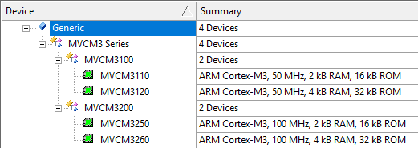
Display of microcontroller devices in development tools
System and Startup Files
CMSIS-Core (Cortex-M) defines the following files to be used by an embedded application:
startup_<device>.c with reset handler and exception vectors. It is executed after reset and calls SystemInit and may contain stack and heap configurations for the user application.system_<device>.c and system_<device>.h with general system configuration information (i.e. for clock and bus setup).<device.h> gives access to processor core and all peripherals. This file should be generated out of the SVD file using SVDConv.exe to ensure consistency between the header file and what is being displayed by the debugger.
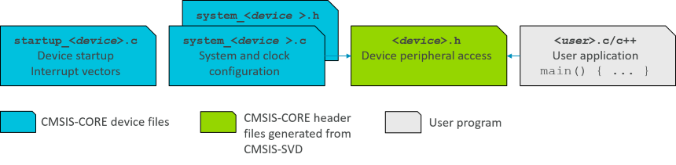
System and startup files in relation to user code
- Note
- CMSIS-Core(M) explains the structure of the system and startup files and how to create them.
Copy the content of the 02_System_and_Startup directory of the Pack_with_Device_Support.zip file to the current working directory:
-
Add a
<conditions> section in your PDSC with the following (the conditions section provides more information on this step): <conditions>
<condition id="MVCM3 CMSIS-CORE">
<!-- conditions selecting Devices -->
<description>MyVendor MVCM3 Series devices and CMSIS-CORE</description>
<require Cclass="CMSIS" Cgroup="CORE"/>
<require Dvendor="Generic:5" Dname="MVCM3*"/>
</condition>
<condition id="Startup Arm">
<description>Startup assembler file for Arm Compiler 6</description>
<require Tcompiler="ARMCC" Toptions="AC6"/>
</condition>
<condition id="Startup GCC">
<description>Startup assembler file for GCC</description>
<require Tcompiler="GCC"/>
</condition>
<condition id="Startup IAR">
<description>Startup assembler file for IAR</description>
<require Tcompiler="IAR"/>
</condition>
</conditions>
- Note
- The assembler based
startup_<device>.s file is tool dependent. Therefore, separate conditions for the various tool vendors are required.
-
Add a
<components> section in your PDSC with the following (the components section provides more information on this step): <components>
<component Cclass="Device" Cgroup="Startup" Cversion="1.0.0" condition="MVCM3 CMSIS-CORE">
<description>System Startup for MyVendor MVCM3 Series</description>
<files>
<!-- include folder -->
<file category="include" name="Device/Include/"/>
<file category="linkerScript" name="Device/Source/Arm/MVCM3xxx_ac6.sct" attr="config" condition="Startup Arm" version="1.0.0"/>
<file category="linkerScript" name="Device/Source/GCC/MVCM3xxx_gcc.ld" attr="config" condition="Startup GCC" version="1.0.0"/>
<file category="source" name="Device/Source/startup_MVCM3xxx.c" attr="config" version="1.0.0"/>
<file category="source" name="Device/Source/system_MVCM3xxx.c" attr="config" version="1.0.0"/>
</files>
</component>
</components>
-
Add a new version number:
<release version="1.0.1">
Startup files included
</release>
-
Finally, save the PDSC file and regenerate the Pack file using the gen_pack.sh script. Afterwards, install the Pack in your development tool and create a new project. Select the software components ::CMSIS:CORE and ::Device:Startup for the project:
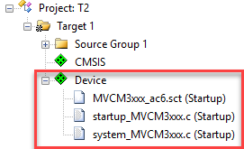
Startup and system files added to a project
- Note
- PackChk will show lots of
INFO messages. This is expected at this point and we will address this problem in the next section.
System View Description File
CMSIS-SVD formalizes the description of the programmer's view for the system contained in ARM Cortex-M processor-based microcontrollers, in particular the memory mapped registers of the peripherals. The level of detail contained in system view descriptions is comparable to what is found in device reference manuals published by silicon vendors. The information ranges from a high level functional description of a peripheral all the way down to the definition and purpose of an individual bit field in a memory mapped register. CMSIS-SVD files are developed and maintained by the silicon vendors. The XML based SVD file is the input for SVDConv.exe that generates the tool dependent debug view and the device header file.
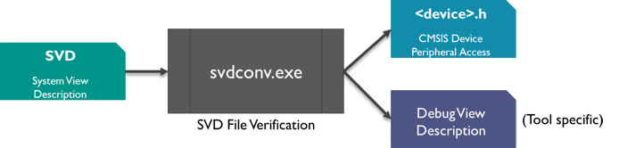
SVD file conversion flow
Copy the content of the 03_SVD_File directory of the Pack_with_Device_Support.zip file to the current working directory:
-
In your currently open Bash shell, run the following commands:
$ cd SVD
$ /c/Users/username/AppData/Local/Arm/Packs/ARM/CMSIS/5.7.0/CMSIS/Utilities/Win32/SVDConv.exe MVCM3xxx.svd --generate=header --fields=macro
-
You should see some output of SVDConv similar to this:
CMSIS-SVD SVD Consistency Checker / Header File Generator V3.3.35
Copyright (C) 2010 - 2020 ARM Ltd and ARM Germany GmbH. All rights reserved.
Arguments: "MVCM3xxx.svd" --generate=header --fields=macro
Found 0 Error(s) and 0 Warning(s).
-
Move the generated header file MVCM3xxx.h to the Device\Include directory.
-
Add the following two lines at the family level in the PDSC file:
<compile header="Device/Include/MVCM3xxx.h"/>
<debug svd="SVD/MVCM3xxx.svd"/>
-
Add a new version number:
<release version="1.0.2">
SVD and header file included
</release>
-
Finally, save the PDSC file and regenerate the Pack file using the gen_pack.sh script. Afterwards, install the Pack in your development tool and create a new project. Depending on your development environment, you will be able to see the SVD file included in your project:
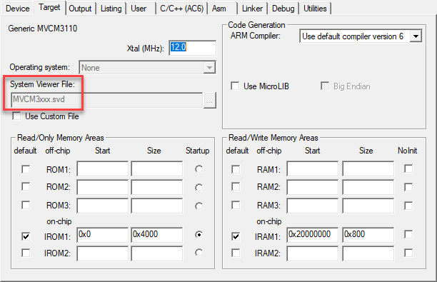
Project with SVD file
- Note
- For more information on SVD, please visit CMSIS-SVD.
Flash Programming Algorithms
Flash Programming are used to erase or download applications to Flash devices. A DFP usually contains predefined Flash algorithms for programming its supported devices. The page Algorithm Functions explains the mechanisms in more detail.
For the MVCM3 device family, two flash algorithms have to be created. MVCM3110/250 have 16 kB of Flash, whereas MVCM3120/260 have 32 kB of Flash memory.
Copy the content of the 04_Flash_Programming directory of the Pack_with_Device_Support.zip file to the current working directory:
-
In the PDSC file, add these lines to the MVCM3110/250 device sections:
<algorithm name="Flash/MVCM3XXX_16.FLM" start="0x00000000" size="0x4000" default="1"/>
-
Add these lines to the MVCM3120/260 device sections:
<algorithm name="Flash/MVCM3XXX_32.FLM" start="0x00000000" size="0x8000" default="1"/>
-
Add a new version number:
<release version="1.0.3">
Flash Programming Algorithms added
</release>
-
Finally, save the PDSC file and regenerate the Pack file using the gen_pack.sh script. Afterwards, install the Pack in your development tool. Depending on your development environment, you will be able to see the Flash Programming Algorithms included in your project (either for a new project or by adding it manually to an existing project):
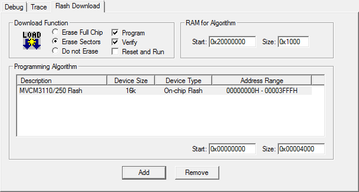
Display of Flash Programming Algorithm
- Note
- The page Flash Programming gives more information on the subject.
Debug Descriptions
Please refer to Debug Setup Tutorial for more information. In this tutorial, we will skip the creation of debug descriptions.
Device Properties
To limit redundancy, devices can be organized in two hierarchy groups:
- family: the attributes of a device family which includes also the processor.
- subFamily: attributes of an optional sub-family; this adds or modifies features of a family.
Parameters of each single device are defined in:
- device: attributes of a specific silicon device
- variant: attributes of a device variant (for example, with different package or temperature range) or an OEM device or board that integrates the device.
A device is described by the following properties:
- description: textual device description
- feature: categorized list of device peripherals and features. This list is used on web sites for the display of device features.
- book: documentation about the device and its processor(s)
- processor: processor and processor features embedded in the device
- compile: device specific general settings for the build tools
- debugconfig: default settings for a debug connection
- debugport: debug port description of the device for the debugger to configure a debug connection.
- accessportV1: access port (APv1) description of the device for the debugger to configure a debug connection.
- accessportV2: access port (APv2) description of the device for the debugger to configure a debug connection.
- debug: device specific information for the debugger to configure a debug connection including System View Description files.
- trace: device specific information for the debugger to configure trace.
- memory: memory layout of the device for internal and external RAM and ROM regions
- algorithm: device specific Flash programming algorithms
A device inherits all specifications from both the family and sub-family levels. Some properties are required to be unique. For example, the name of the SVD file attribute of the <debug> property. Therefore, the SVD file specified on the family level can be redefined by the attribute on the sub-family or device level. Other information like the <description> and <feature> entries are adding up, starting with the information from the family and sub-family level and finalizing with the information on the device level.
The following shows how to specify the device properties for the MVCM3110 device (refer to the specification shown in Basic Device Family Pack). The other members of the family are specified accordingly.
Copy the content of the 05_Device_Properties directory of the Pack_with_Device_Support.zip file to the current working directory:
-
The MVCM3 Series family properties processor, compile, description, and debug are already specified. There are additional common properties that can be specified on the family level: book and feature. Add the following lines to the PDSC file in the <family> section:
<book name="Docs/dui0552a_cortex_m3_dgug.pdf" title="Cortex-M3 Generic User Guide"/>
<book name="Docs/MVCM3XXX_Datasheet.pdf" title="MVCM3 Series Datasheet"/>
<book name="Docs/MVCM3XXX_Product_Brief.pdf" title="MVCM3 Product Brief"/>
<feature type="ExtInt" n="16"/>
<feature type="Temp" n="-40" m="105" name="Extended Temperature Range"/>
<feature type="VCC" n="2.5" m="3.6"/>
<feature type="RTC" n="32768"/>
<feature type="WDT" n="1"/>
-
The MVCM31xx sub-family has some features that are common for the two member devices. Please add the following code to the MVCM31100 <subFamily> section:
<feature type="IOs" n="26"/>
<feature type="I2C" n="1"/>
<feature type="UART" n="4"/>
<feature type="Timer" n="6" m="32"/>
<feature type="QFP" n="32"/>
-
The MVCM3110 device has some features that are unique to that device. Please add the following code to the MVCM3110 <device> section:
<feature type="PWM" n="2" m="16"/>
Device Specific Software Components
Finally, software components and example projects need to be added to the DFP.
-
Add the following lines to the PDSC file in the <components> section:
<component Cclass="Device" Cgroup="HAL" Csub="GPIO" Cversion="1.0.0" condition="MVCM3 CMSIS-Core">
<description>GPIO HAL for MyVendor MVCM3 Series</description>
<files>
<file category="header" name="Device/Include/GPIO.h"/>
<file category="source" name="Device/Source/GPIO.c"/>
</files>
</component>
<component Cclass="Device" Cgroup="HAL" Csub="ADC" Cversion="1.0.0" condition="MVCM3 CMSIS-Core">
<description>ADC HAL for MyVendor MVCM3 Series</description>
<files>
<file category="header" name="Device/Include/ADC.h"/>
<file category="source" name="Device/Source/ADC.c"/>
</files>
</component>
<component Cclass="CMSIS Driver" Cgroup="I2C" Cversion="1.0.0" condition="MVCM3 CMSIS-Core" maxInstances="3">
<description>I2C Driver for MVCM3 Series</description>
<RTE_Components_h>
#define RTE_Drivers_I2C0
#define RTE_Drivers_I2C1
#define RTE_Drivers_I2C2
</RTE_Components_h>
<files>
<file category="source" name="Drivers/I2C/I2C_MVCM3.c"/>
<file category="header" name="Drivers/I2C/I2C_MVCM3.h"/>
</files>
</component>
<component Cclass="CMSIS Driver" Cgroup="UART" Cversion="1.0.0" condition="MVCM3 CMSIS-Core" maxInstances="5">
<description>UART Driver for MVCM3 Series</description>
<RTE_Components_h>
#define RTE_Drivers_UART0
#define RTE_Drivers_UART1
#define RTE_Drivers_UART2
#define RTE_Drivers_UART3
#define RTE_Drivers_UART4
</RTE_Components_h>
<files>
<file category="source" name="Drivers/UART/UART_MVCM3.c"/>
<file category="header" name="Drivers/UART/UART_MVCM3.h"/>
</files>
</component>
- Note
- The first two software components are added to Device::HAL because they are specific to the device family and are not using a published API. The drivers for I2C and UART are adhering to the CMSIS-Driver specification. Thus, they are added to the Cclass CMSIS Driver.
-
An example project has also been created. Add an <examples> section with the following:
<examples>
<example name="Dummy" doc="Abstract.txt" folder="Examples/dummy">
<description>Dummy project</description>
<board name="MVCM3 Starter Kit" vendor="MyVendor"/>
<project>
<environment name="uv" load="dummy.uvprojx"/>
</project>
<attributes>
<category>Getting Started</category>
</attributes>
</example>
</examples>
-
Add a new version number:
<release version="1.0.4">
DFP finalized
</release>
-
Finally, save the PDSC file and regenerate the Pack file using the gen_pack.sh script. Afterwards, install the Pack in your development tool.
This concludes the DFP tutorial. If you have a development board for your device, check out the next section that explains how to add boards to a pack to supply board support.
Pack with Board Support
A Software Pack that contains a <board> element is called Board Support Pack (BSP). A BSP may contain additional Software Components, Example Projects, as well as Code Templates. The typical content of a BSP is:
- Source code, libraries, header/configuration files for the underlying hardware and documentation (for example user manuals, getting started guides, and schematics).
- Example Projects that show the usage of the development board and its peripherals.
- User Code Templates that can be used as a starting point for using the development board or the mounted device.
This section is a tutorial that explains how to create a BSP. Initially the PDSC file in the BSP only describes an evaluation board. This BSP is then extended to contain also software components that interface with the hardware of the board. Example projects and code templates may be added as described in the section Pack with Software Components.
BSP Use Cases
A BSP is typically provided by a Board Vendor and is used to extend development tools with support for development boards. In general, the BSP enables Board Vendors to distribute tool independent board support for their development platforms.
BSPs can also be used to provide information for the display on web sites. One example is the new boards page on developer.arm.com:
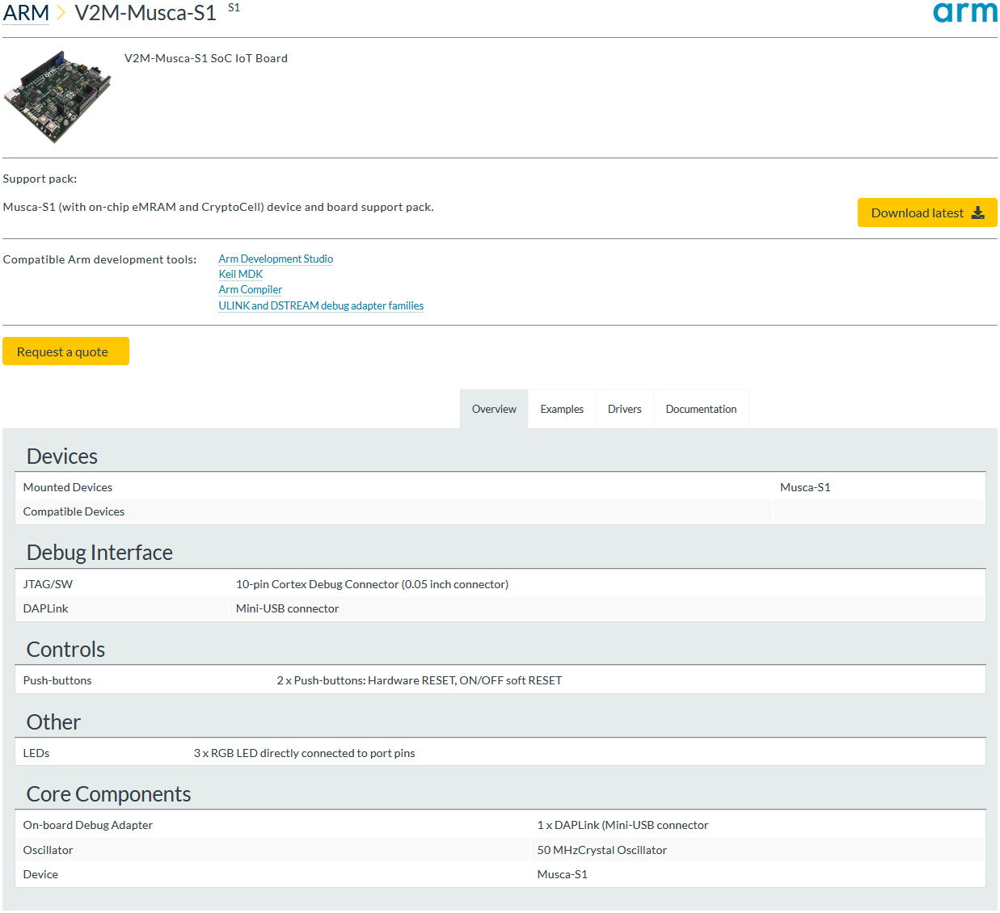
Board information on a web site extracted from a BSP
Specify a Development Board
Preparations
- Install the Software Pack Keil::ARMCortex_DFP as this will be required for the BSP to function properly.
- Create a working directory on your PC, for example C:\temp\working_bsp.
- Go to the directory \CMSIS\Pack\Tutorials available in the ARM::CMSIS Pack installation. Please consult your development tool's documentation for more information on the Pack installation directory structure. In a standard µVision installation, you will find it below %localappdata%\Arm\Packs\ARM\CMSIS\version.
- Unzip the file Pack_with_Board_Support.zip.
- Copy the content of the ZIP file's 01_Specify_Dev_Board directory into your working directory.
- Copy the gen_pack.sh script from your CMSIS-Pack installation's \CMSIS\Pack\Bash directory to the working directory.
- Make sure that files/directories are not write protected (remove read-only flag).
- Open the MyVendor.MyBSP.pdsc file in an editor.
Code Example
-
Add a <boards> section in the PDSC file with the following:
<boards>
<board vendor="MyVendor" name="MyDevBoard" revision="V1" salesContact="sales@keil.com" orderForm="http://www.keil.com">
<description>MyVendor MyDevBoard Board Description</description>
<image small="Images/MyDevBoard_small.png" large="Images/MyDevBoard_large.png"/>
<book category="setup" name="Docs/MyDevBoard/MyDevBoard_setup.pdf" title="Getting Started"/>
<book category="schematic" name="Docs/MyDevBoard/MyDevBoard_schematics.pdf" title="Schematics"/>
<book category="manual" name="Docs/MyDevBoard/MyDevBoard_um.pdf" title="User Manual"/>
<mountedDevice deviceIndex="0" Dvendor="ARM:82" Dname="ARMCM3"/>
<compatibleDevice deviceIndex="0" Dvendor="ARM:82" Dfamily="ARM Cortex M3"/>
<feature type="ODbg" n="1" name="On-board J-LINK Lite"/>
<feature type="PWR" n="5" name="USB Powered"/>
<feature type="DIO" n="8"/>
<feature type="SPI" n="1"/>
<feature type="LED" n="6" name="User LEDs"/>
<feature type="ArduinoFF" n="1"/>
<debugInterface adapter="J-Link Lite" connector="Mini-USB"/>
</board>
</boards>
- Note
- All code examples in this and the following sections can be found in the
snippets.xml file in the 01_Specify_Dev_Board directory.
-
Finally, save the PDSC file and generate the Pack file using the gen_pack.sh script. See Generate a Pack for further details. Afterwards, install the Pack in your development tool.
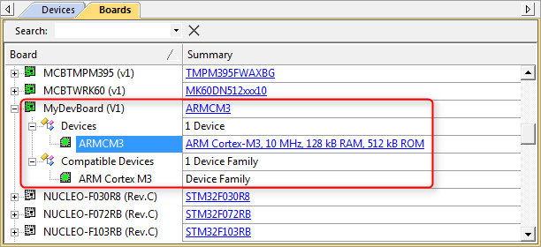
Display of development boards in development tools
- Note
- packChk.exe will display these warnings:
*** WARNING M304: C:\03_work\Packs\Arm\Tutorial\BSP\working\build\MyVendor.MyBSP.pdsc
No package URL (<url>-tag and/or value) found in PDSC file!
*** WARNING M379: C:\03_work\Packs\Arm\Tutorial\BSP\working\build\MyVendor.MyBSP.pdsc (Line 28)
No example(s) found for Board '[MyVendor] MyDevBoard'.
This is because this BSP does neither contain a download URL nor an example project for the board that has been specified.
Create a BSP Bundle
A bundle is basically a variant on the Cclass level. It specifies the attributes Cclass, Cversion and optionally Cgroup and Cvendor for a collection of interdependent components. Components within a bundle inherit the attributes set by the bundle and must not set these attributes again. Bundles ensure consistency of attributes across multiple interworking components and restrict the mix and match of components within a Cclass from different solutions. In addition to components, a bundle has the mandatory elements description and doc (for documentation).
Copy the content of the 02_BSP_Bundle directory of the Pack_with_Board_Support.zip file to the current working directory:
-
Add a
<conditions> section in your PDSC with the following (the conditions section provides more information on this step): <condition id="ARM Cortex M3 Series">
<description>ARM Cortex M3 device required</description>
<require Dfamily="ARM Cortex M3" Dvendor="ARM:82"/>
</condition>
<condition id="MyDevBoard Board Setup">
<description>Board Setup Code required</description>
<require condition="ARM Cortex M3 Series"/>
<require Cclass="Board Support" Cgroup="Board Setup"/>
</condition>
-
Add a
<components> section in your PDSC with the following (the components section provides more information on this step): <bundle Cbundle="MyDevBoardSupport" Cclass="Board Support" Cversion="1.0.1">
<description>MyDevBoard custom board support package</description>
<doc>Docs/BSP/MyBSP.htm</doc>
<component Cgroup="Board Setup" condition="ARM Cortex M3 Series">
<description>Custom board setup code</description>
<files>
<file category="doc" name="Docs/BSP/Setup.htm"/>
<file category="header" name="MySWComp/Include/setup.h"/>
<file category="source" name="MySWComp/Source/setup.c"/>
</files>
</component>
<component Cgroup="I/O" Csub="LED" condition="MyDevBoard Board Setup">
<description>LED code for custom board</description>
<files>
<file category="doc" name="Docs/BSP/LED.htm"/>
<file category="header" name="MySWComp/Include/led.h"/>
<file category="header" name="MySWComp/Include/config_led.h" attr="config" version="1.0.0"/>
<file category="source" name="MySWComp/Source/led.c"/>
</files>
</component>
<component Cgroup="I/O" Csub="GPIO" condition="MyDevBoard Board Setup">
<description>GPIO code for custom board</description>
<files>
<file category="doc" name="Docs/BSP/GPIO.htm"/>
<file category="header" name="MySWComp/Include/gpio.h"/>
<file category="header" name="MySWComp/Include/config_gpio.h" attr="config" version="1.0.0"/>
<file category="source" name="MySWComp/Source/gpio.c"/>
</files>
</component>
</bundle>
-
Add a new version number:
<release version="1.0.1" date="2020-12-01">
Board support bundle added
</release>
-
Finally, save the PDSC file and regenerate the Pack file using the gen_pack.sh script. Afterwards, install the Pack in your development tool and observe the differences to version 1.0.0.
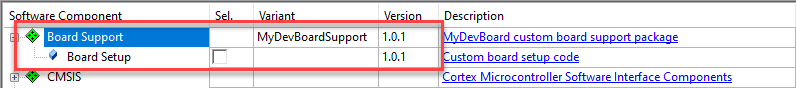
BSP bundle display in development tools